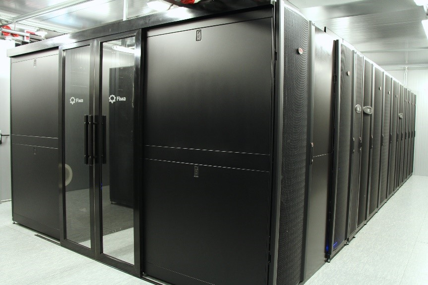
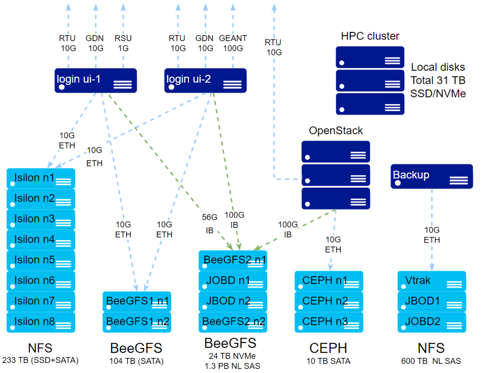

HPC hardware specifications
General System parameters
30 computing nodes
2736 CPU cores
25 TB RAM (up to 2 TB per process)
28 Graphical Nvidia Tesla processors (GPU)
240 TFlops overall performance (134 Tflops x86 + 106 Tflops GPU)
1.6 PB data storage
10-100 Gb/s access network
56-200 Gb/s InfiniBand interconnection
RTU HPC cluster “Rudens” consists of 30 computing nodes for job execution and one head node which performs cluster management function. All nodes are inter-connected with fast InfiniBand network. Each compute node is equipped with two x86_64 architecture processors (CPUs), and some of the nodes additionally with 2 or 4 Nvidia Tesla graphical accelerators (GPU). Cluster architecture is heterogeneous, combining nodes of different generations and technical parameters.
Several network-attached storage systems are available for storing user data with a total capacity of 1.6 PB. For tasks with intensive I/O, a special NVMe disk array with BeeGFS parallel file system is available.
Users connect to a separate login node which provides a work environment and tools for running jobs in the cluster. Job management is provided by Torque/Moab tools.

Access Network
10 Gbps connection with Latvian Academic computer network, 100 Gbps to European Academic Computer Network GEANT and Genomics Data Network, and 2 Gbps to commercial Internet providers in Latvia is provided.
HPC cluster RUDENS
Login nodes
ui-2.hpc.rtu.lv (primary): 2 x AMD EPYC 7502P (Rome) @ 2.5GHz (kopā 64 kodoli), RAM 256 GB DDR4, 3.5 TB NVMe RAID 0, 100 Gb/s Ethernet access network, 100 Gbiti/s Infiniband EDR
ui-1.hpc.rtu.lv: 2 x Intel Xeon CPU E5-2680 v3 @ 2.50GHz (total 24 cores), 128 GB RAM, 10 Gb/s Ethernet access network, 56 Gb/s InfiniBand FDR
CPU computing nodes
4 nodes SuperMicro AS-1125HS (wn67-wn70,feature=epyc): 2 x 4th gen AMD Epyc 9654 (Genoa) @ 2.4 GHz (total 192 cores per node), RAM 1.5 TB DDR5, 7 TB NVMe RAID 0, 200 Gbps Infiniband HDR
3 nodes Dell EMC PowerEdge R6525, (wn62-wn64, feature=epyc): 2 x AMD Epyc 7713 (Milan) @ 2 GHz (total 128 cores per node), RAM 2 TB DDR4, 3.5 TB NVMe RAID 0, 100 Gbiti/s Infiniband EDR
10 nodes Dell EMC PowerEdge R640 (wn02-wn10, feature=vasara): 2 x Intel(R) Xeon(R) Gold 6154 CPU @ 3.00GHz (total 36 cores per node), RAM 384 GB DDR4 2666 MHz ECC, 1TB SSD, Infiniband EDR 100 Gb/s
GPU computing nodes
2 GPU nodes Dell EMC PowerEdge (wn71-wn72, feature=gold6548,gpu,l40s):2 x Intel Xeon Gold 6548 gen.5 @ 2.5Hz (total 64 cores per node), 4 x NVIDIA L40s GPU, 48 GB GDDR6, 1.5 TB DDR5, 7 TB NVMe RAID 0, Infiniband HDR 200 Gb/s
4 GPU nodes Dell EMC PowerEdge (wn73-wn76, feature=epyc,epyc9654,gpu,l40s):2 x 4th gen AMD Epyc 9654 (Genoa) @ 2.4 GHz (total 192 cores per node), 2 x NVIDIA L40s GPU, 48 GB GDDR6, 1.5 TB DDR5, 7 TB NVMe RAID 0, Infiniband HDR 200 Gb/s
1 GPU mezgls Lenovo SR670 V2 (wn44, feature=lenovo,a100):2 x Intel Xeon Gold 6348 gen.3 @ 2.6Hz (total 56 cores per node), 4 x NVIDIA A100 GPU, 40 GB HBM2, NVLink, 512 GB DDR4 3200 MHz ECC, 5.8 TB NVMe SSD, Infiniband EDR 100 Gb/s
2 GPU mezgli Dell EMC PowerEdge C4140 (wn59-wn60, feature= vasara,v100): 2 x Intel(R) Xeon(R) Gold 6130 CPU @ 2.10GHz (total 32 cores per node), 4 x NVIDIA Tesla V100 GPU per node, 16 GB HBM2, 5120 CUDA kodoli, 192 GB DDR4 2666 MHz ECC, 240 GB SSD, Infiniband EDR 100 Gb/s
High memory nodes
1 node SuperMicro AS-1124US-TNRP (wn61, feature=epyc7f72): 2 x AMD EPYC 7F72 CPU @ 3.2 GHz (total 48 cores per node), RAM 2 TB DDR4 3200MHz DDR4, 1TB SSD, InfiniBand EDR 100 Gb/s
1 node Dell PowerEdge R940 (wn01): 4 x Intel Xeon Gold 6140 CPU @ 2.30GHz (total 72 cores per node), RAM 1.5 TB DDR4 2666 MHz ECC, 1.8 TB SSD, Ethernet 10 Gb/s
Cluster management software
Operating system (OS): Linux Centos 7.9
Job Management: Torque 6.1.1.1/ Moab 9.1.1
Accounting: Moab Accounting Manager
OS image provisioning: xCAT
Data Storage Systems
Primary: BeeGFS #2 Network-attached Storage (1.3 PB, /home_beegfs; /scratch_beegfs)
2 nodes SuperStorage 6029P
Parallel file system BeeGFS
100Gbit/s Infiniband
30TB NVMe fast disk pool
1.3 PB NL SAS disk pool
Isilon NAS (238 TB, /home)
8 nodes EMC Isilon x200
Distributive file system OneFS
NFS client connection
40 Gb/s InfiniBand connection with the cluster
238 TB SATA SDD + SATA Spinning disks
BeeGFS #1 NAS (104 TB, /mnt/beegfs)
2 nodes: SuperStorage 6029P and Lenovo x3650 M5
Parallel file system BeeGFS
10 Gb/s Infiniband with cluster
100 TB SATA HDD disk pool
Backup NAS (600 TB)
VTrak D5800xd + JBOD
NFS client connection
600 TB NL SAS disk pool
Scratch disks (31 TB in total)
Computing nodes are equipped with local SDD disks with capacity up to 3.5 TB
Storage connection diagram

Node names and features
Name |
Type |
RAM |
CPU |
CPU cores |
GPUs |
Local disk |
qsub features |
|---|---|---|---|---|---|---|---|
rudens |
cluseter head |
32 GB |
E5-2620 v3 |
||||
ui-1 |
login |
64 GB |
E5-2650 v3 |
20 |
0 |
/scratch |
|
ui-2 |
login |
256 GB |
EPYC 7502P |
64 |
0 |
/scratch |
|
wn01 |
compute-smp, |
1.48 TB |
Gold 6140 |
72 |
0 |
/scratch |
dell vasara highmem centos7 largescratch |
high-mem |
|||||||
wn02-wn11 |
compute |
384 GB |
Gold 6154 |
36 |
0 |
/scratch |
dell vasara centos7 largescratch gold6154 |
wn44 |
compute-gpu |
512 GB |
Gold 6348 |
56 |
4 |
/scratch, 5.8 TB |
lenovo gpu a100 |
wn59-wn60 |
compute-gpu |
192 GB |
Gold 6130 |
32 |
4 |
/scratch |
vasara vasara-32 gpu v100 centos7 |
wn61 |
compute, high-mem |
2 TB |
Epyc 7F72 |
48 |
0 |
/scratch, 1.8 TB |
epyc7f72 largescratch |
wn62-wn64 |
compute |
2 TB |
Epyc 7713 |
128 |
0 |
/scratch, 3.5 TB |
epyc epyc7713 centos7 |
wn67-wn70 |
compute |
1.5 TB |
Epyc 9654 |
192 |
0 |
/scratch, 7 TB |
epyc epyc9654 centos7 |
wn71-wn72 |
compute |
1.5 TB |
Xeon Gold 6548 |
64 |
4 |
/scratch, 7 TB |
gold6548 gpu l40s |
wn73-wn76 |
compute |
1.5 TB |
AMD Epyc 9654 |
192 |
2 |
/scratch, 7 TB |
epyc epyc9654 gpu l40s |